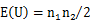
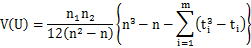

| マン・ホイットニーのU検定 |


| 二つのバイサルファイト配列のグループについて、全てのCpGサイトを含んだ形で、
統計的な有意差があるかどうかについては
マン・ホイットニーのU検定
を用いてP値を求めています。マン・ホイットニーのU検定は、ウィルコクソンの順位和検定とも呼ばれ、
2群の分布したデータ間に統計的な有意差があるかどうか調べるのに用いられるノンパラメトリックな統計手法です。
マン・ホイットニーのU検定はスチューデントのt検定と同様の状況で用いられますが、特にCpGメチル化の解析でのhyperまたはhypoメチル化の場合のように、
分布が明らかに正規分布から外れるような場合には、パラメトリックな方法であるスチューデントのt検定よりも、
ノンパラメトリックな方法であるマン・ホイットニーのU検定の方が適していると思われます。
マン・ホイットニーのU検定における両側検定のP値は、各バイサルファイト配列でのメチル化率
（配列中の全てのCpGに対するメチル化されたCpGの割合）についての順位から求めます（下記参照）。
このP値は、バイサルファイト配列の2つのグループ間での、メチル化率の分布が独立しているか（違いがあるか）を示します。 重要な点として、マン・ホイットニーのU検定は、2つのグループそれぞれのメチル化率の平均値に違いがあるかどうかを検定する方法であるため、 インプリンティング領域のCpGのメチル化のようなアレル特異的なメチル化については検定できません。 具体的には、(1)ランダムな50%のメチル化、(2)0%メチル化のアレルと100%メチル化のアレルが半分ずつ、の2群を区別できません。 また、メチル化率から求めていますので、メチル化のパターンの違いは考慮されません。 |
|||||||||||||||||||||||||||||||||||||||||||||||||||||||||||||||||||||||||||||||||||||||||||||||||||||||||||||||||||||||||||||||||||||||||||||||||||||||||||||||||||||||||||
| |
|||||||||||||||||||||||||||||||||||||||||||||||||||||||||||||||||||||||||||||||||||||||||||||||||||||||||||||||||||||||||||||||||||||||||||||||||||||||||||||||||||||||||||
| 以下のサンプルデータセット（QUMAのサンプル配列の解析結果）について | |||||||||||||||||||||||||||||||||||||||||||||||||||||||||||||||||||||||||||||||||||||||||||||||||||||||||||||||||||||||||||||||||||||||||||||||||||||||||||||||||||||||||||
|
|||||||||||||||||||||||||||||||||||||||||||||||||||||||||||||||||||||||||||||||||||||||||||||||||||||||||||||||||||||||||||||||||||||||||||||||||||||||||||||||||||||||||||
| メチル化率の平均値、0.7409と0.2579の違いが有意かどうかを調べます。 | |||||||||||||||||||||||||||||||||||||||||||||||||||||||||||||||||||||||||||||||||||||||||||||||||||||||||||||||||||||||||||||||||||||||||||||||||||||||||||||||||||||||||||
|
最初に、値（この場合メチル化率）の順位を決めます。もし同順位が複数ある場合は、順位の平均値を用います。
たとえば、このサンプルデータでは二つの配列でメチル化率が3/19で順位が3位と4位ですが、この場合は、
平均値の3.5を両方の配列の順位として用います。 次に、それぞれのグループの順位和、R1とR2を求めます。 |
|||||||||||||||||||||||||||||||||||||||||||||||||||||||||||||||||||||||||||||||||||||||||||||||||||||||||||||||||||||||||||||||||||||||||||||||||||||||||||||||||||||||||||
|
|||||||||||||||||||||||||||||||||||||||||||||||||||||||||||||||||||||||||||||||||||||||||||||||||||||||||||||||||||||||||||||||||||||||||||||||||||||||||||||||||||||||||||
|
そして、それぞれのグループごとのU値であるU1とU2を下記の式から求めます。 U1 = n1 * n2 + n1 * (n1 + 1) / 2 - R1 = 8.5 U2 = n1 * n2 + n2 * (n2 + 1) / 2 - R2 = 121.5 U1とU2のうち、より小さい値をUとして採用します。このデータではU = 8.5となります。 最後に、両側検定のP値をU値から求めます。配列数が多い場合（20配列以上）は、正規分布による近似を用いてP値を求めています。 配列数が少ない場合（20配列以下）は、直接計算により正確な確率を求めています（マン・ホイットニーの正確確率U検定）。 |
|||||||||||||||||||||||||||||||||||||||||||||||||||||||||||||||||||||||||||||||||||||||||||||||||||||||||||||||||||||||||||||||||||||||||||||||||||||||||||||||||||||||||||
正規分布による近似は以下のように行っています。 ここで、zは標準正規分布に従うとしています。E(U)はU値の平均値、V(U)はU値の分散で、以下のように求めます。   ここで、tiは位置iにおける配列数（同順位の配列の数）です。 このサンプルデータではE(U) = 65, V(U) = 257.812, z = 3.51879となります。そして標準正規分布の統計表から、両側検定のP値は0.0004となります （両側検定では統計表から求めた上側確率の２倍）。 |
|||||||||||||||||||||||||||||||||||||||||||||||||||||||||||||||||||||||||||||||||||||||||||||||||||||||||||||||||||||||||||||||||||||||||||||||||||||||||||||||||||||||||||
| 別のサンプルデータ（配列数11）について、マン・ホイットニーの正確確率U検定でP値を求めます。 | |||||||||||||||||||||||||||||||||||||||||||||||||||||||||||||||||||||||||||||||||||||||||||||||||||||||||||||||||||||||||||||||||||||||||||||||||||||||||||||||||||||||||||
| 表1 | |||||||||||||||||||||||||||||||||||||||||||||||||||||||||||||||||||||||||||||||||||||||||||||||||||||||||||||||||||||||||||||||||||||||||||||||||||||||||||||||||||||||||||
|
|||||||||||||||||||||||||||||||||||||||||||||||||||||||||||||||||||||||||||||||||||||||||||||||||||||||||||||||||||||||||||||||||||||||||||||||||||||||||||||||||||||||||||
| Table2 | |||||||||||||||||||||||||||||||||||||||||||||||||||||||||||||||||||||||||||||||||||||||||||||||||||||||||||||||||||||||||||||||||||||||||||||||||||||||||||||||||||||||||||
|
|||||||||||||||||||||||||||||||||||||||||||||||||||||||||||||||||||||||||||||||||||||||||||||||||||||||||||||||||||||||||||||||||||||||||||||||||||||||||||||||||||||||||||
|
U1 = n1 * n2 + n1 * (n1 + 1) / 2 - R1 = 4 U2 = n1 * n2 + n2 * (n2 + 1) / 2 - R2 = 26 U = min (U1, U2) = 4 |
|||||||||||||||||||||||||||||||||||||||||||||||||||||||||||||||||||||||||||||||||||||||||||||||||||||||||||||||||||||||||||||||||||||||||||||||||||||||||||||||||||||||||||
| 周辺度数（各グループの配列数6と5、及び、各メチル率についての配列数1, 2, 2, 2, 1, 1, 1, 1）を固定した場合、176の組み合わせがあり、そのうち、 U値がサンプルデータでのU値である4以下の11通りの組み合わせは以下のようになります。 | |||||||||||||||||||||||||||||||||||||||||||||||||||||||||||||||||||||||||||||||||||||||||||||||||||||||||||||||||||||||||||||||||||||||||||||||||||||||||||||||||||||||||||
|
|||||||||||||||||||||||||||||||||||||||||||||||||||||||||||||||||||||||||||||||||||||||||||||||||||||||||||||||||||||||||||||||||||||||||||||||||||||||||||||||||||||||||||
| 両側検定のP値を求めるには、これらの11の組み合わせそれぞれの確率の合計値を求めます。このサンプルでは、両側検定のP値は0.0498となります。 | |||||||||||||||||||||||||||||||||||||||||||||||||||||||||||||||||||||||||||||||||||||||||||||||||||||||||||||||||||||||||||||||||||||||||||||||||||||||||||||||||||||||||||